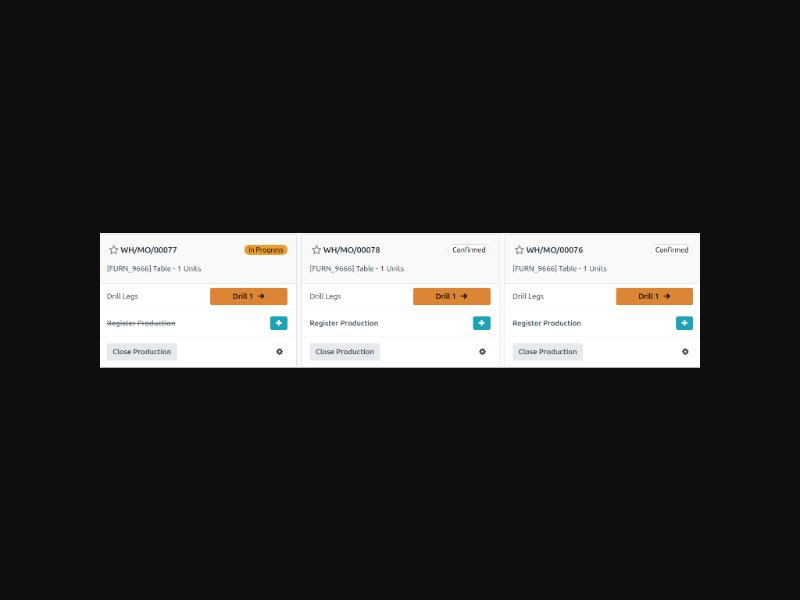
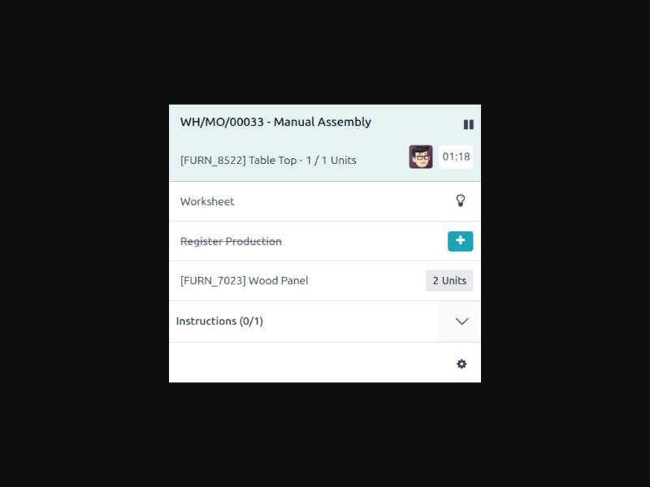
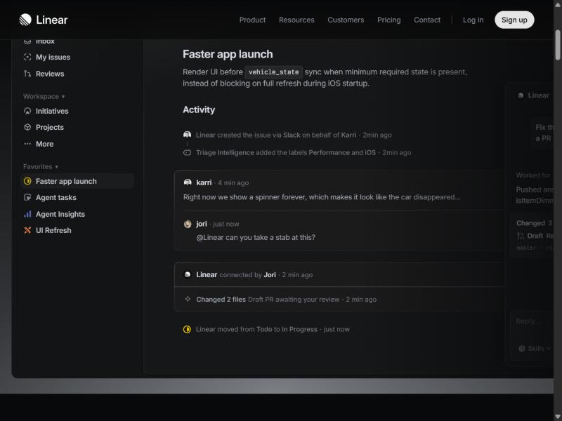

Bàn tổ làm lại — 3 phương án
Dữ liệu lấy đúng từ màn hiện tại: bàn tổ Cắt 2, hai lệnh LSX26-0004 Bìa sách A5 (đang chạy) và LSX26-0003 Ruột sách A5 64 trang (chờ làm). Cả ba phương án giữ đúng luồng đã chốt: giao thợ trước rồi mới bắt đầu, bắt đầu cần đã nhận số từ công đoạn trước, ghi mẻ tốt và hỏng, giao sang công đoạn sau theo mẻ, bên nhận xác nhận, tạm dừng phải có lý do, vật tư xin theo việc.
Ảnh tham khảo đã mở và chụp




Đổi chữ cho dễ hiểu (áp cả ba phương án)
- "Tổ nhận lúc" → "Nhận việc lúc". "Nhận" ở thanh trên → "Đã nhận từ công đoạn trước".
- "Tốt" → "Đã làm đạt". "Còn phải làm" giữ nguyên. Thêm "Đã giao sang công đoạn sau" vì đó là con số bàn giao thật.
- "Tổ của bạn" → bỏ, thay bằng làm nổi chính ô công đoạn của tổ trong chuỗi.
- "Quy cách chạy máy" → "Quy cách". Bỏ "SL đặt của đơn" ở ngăn (tổ cắt cần số tờ, không cần số đơn).
- "Dự kiến: 2 phút (2 – 4)" → "Dự kiến chạy khoảng 2 phút".
- Bỏ ô "Con / tờ", "Số kẽm", "Mực in" khỏi ngăn của tổ Cắt: tổ không dùng. Chỉ hiện ở công đoạn In.
A. Thẻ việc
Bám ảnh Odoo Shop Floor. Mỗi việc là một thẻ lớn, chỉ có ba thứ: làm cho lệnh nào, đang tới đâu, bấm gì tiếp. Không còn bảng con trong lệnh, không còn thanh cuộn ngang.
- Hợp nhất với màn đặt ở máy tính bảng cạnh máy cắt: nút to, ít chữ.
- Chuỗi công đoạn rút còn một dòng "Sau mình: ...".
- Nhược: lệnh có nhiều việc cùng tổ thì thẻ nhân lên, phải lọc.
Màn bàn tổ
Bàn tổ Cắt 2
ViệcLịchSản lượng
Đang chạyLSX26-000400:42:10
Bìa sách A5
Công ty Cổ phần Bibica
Cắt tờ trên Máy cắt tờ ITO 100200 / 350 tờ in
Sau mình: Bài in 3 màu 4 màu
Đào Văn HoanNhận việc 9/10 09:57
Ghi mẻTạm dừng
Chờ làmLSX26-0003
Ruột sách A5 64 trang
Công ty Cổ phần Bibica
Cắt tờ trên Máy cắt tờ Kyodo 1320 / 350 tờ in
Sau mình: Bài in 3 màu 4 màu
Chưa giao thợNhận việc 9/10 09:57
Giao thợ để bắt đầu
Hết việc. Việc mới phát hành xuống sẽ tự hiện ở đây.
2 việc
Ngăn chi tiết một việc
LSX26-0004 Bìa sách A5
Cắt tờ
Đang làmGiao và nhậnVật tưLỗi KCSLịch sử
Đã nhận từ công đoạn trước
175tờ nguyên
Đã làm đạt
200tờ in
Còn phải làm
150tờ in
Mẻ đã ghi
10:00 – 10:40Đạt 120Hỏng 2Đào Văn Hoan
10:45 – 11:20Đạt 80Hỏng 0Đào Văn Hoan
Quy cách
- Giấy
- Ivory 210 gsm
- Khổ giấy nguyên
- 1090 × 790 mm
- Cắt ra khổ
- 790 × 540 mm, 1 tờ nguyên thành 2 tờ in
- Máy
- Máy cắt tờ ITO 100
- Người làm
- Đào Văn Hoan
Ghi mẻTạm dừngKết thúcĐổi máyBáo sự cố
B. Danh sách thoáng + ngăn hai cột
Bám ảnh Linear. Màn chính là một danh sách, mỗi việc một dòng cao, nhóm theo trạng thái thay vì theo lệnh. Ngăn chi tiết chia đôi: cột trái là việc đang diễn ra (số, mẻ, giao nhận), cột phải là thông tin đứng yên (quy cách, máy, kế hoạch).
- Hợp khi tổ có nhiều việc cùng lúc: đọc lướt dọc nhanh nhất.
- Một dòng đủ trả lời "việc gì, cho ai, tới đâu, ai làm".
- Nhược: mất hình ảnh chuỗi công đoạn ở màn ngoài, chỉ còn chữ "Sau mình".
Màn bàn tổ
Bàn tổ Cắt 2
ViệcLịchSản lượng
| Việc | Trạng thái | Tiến độ | Máy | Người làm | Sau mình |
|---|---|---|---|---|---|
| Đang chạy 1 | |||||
Bìa sách A5 LSX26-0004 Công ty Cổ phần Bibica |
Đang chạy | 200 / 350 tờ in |
Máy cắt tờ ITO 100 | Đào Văn Hoan | Bài in 3 màu 4 màu |
| Chờ làm 1 | |||||
Ruột sách A5 64 trang LSX26-0003 Công ty Cổ phần Bibica |
Chờ làm | 0 / 350 tờ in |
Máy cắt tờ Kyodo 132 | Chưa giao | Bài in 3 màu 4 màu |
Trang 1/12 việc
Ngăn chi tiết một việc
LSX26-0004 Bìa sách A5 Công ty Cổ phần Bibica
Cắt tờ
Đã nhận
175tờ nguyên
Đã làm đạt
200tờ in
Đã giao sang In
200tờ in
Còn phải làm
150tờ in
Diễn biến
Đ
Ghi mẻ 10:45 – 11:20
11:21Đạt 80, hỏng 0
T
Giao 200 tờ in sang Bài in 3 màu 4 màu
10:52Nhóm thợ in máy 4 màu đã xác nhận nhận đủ
Đ
Ghi mẻ 10:00 – 10:40
10:41Đạt 120, hỏng 2
K
Kho đã xuất 175 tờ Ivory 210, tổ đã nhận
09:58Đ
Bắt đầu chạy
09:59Ghi mẻGiao sang công đoạn sauTạm dừngKết thúcĐổi máyBáo sự cố
C. Chuỗi công đoạn
Bám ảnh GitHub Actions. Giữ nhóm theo lệnh như hiện tại nhưng bỏ bảng con: mỗi lệnh là chuỗi hộp công đoạn, ô của tổ mình được viền màu trạng thái, phía dưới chỉ một hàng thông tin việc và nút. Ngăn chi tiết đi theo dòng chảy số lượng: nhận vào, làm đạt, hỏng, giao đi.
- Giữ được cái hay của màn cũ (thấy cả chuỗi) nhưng thoáng hơn hẳn.
- Dòng chảy số trong ngăn khớp đúng luật bàn giao theo mẻ.
- Nhược: lệnh dài 7–8 công đoạn thì hộp hẹp, phải cắt chữ.
Màn bàn tổ
Bàn tổ Cắt 2
ViệcLịchSản lượng
Bìa sách A5LSX26-0004Công ty Cổ phần BibicaNhận việc 9/10 09:57
Cắt tờ
Cắt 2
Bài in 3 màu 4 màu
Nhóm thợ in máy 4 màu
Cán màng
Tổ Cán màng
Cắt thành phẩm thuê ngoài
Gia công Thành Công
Đang chạy200 / 350 tờ inMáy cắt tờ ITO 100Đào Văn HoanGhi mẻMở
Ruột sách A5 64 trangLSX26-0003Công ty Cổ phần BibicaNhận việc 9/10 09:57
Cắt tờ
Cắt 2
Bài in 3 màu 4 màu
Nhóm thợ in máy 4 màu
Gấp thuê ngoài
Gia công Thành Công
Bắt tay, vào keo
Thành phẩm
Xén 3 mặt KCS cuối
Cắt
Chờ làm0 / 350 tờ inMáy cắt tờ Kyodo 132Chưa giao thợGiao thợMở
2 lệnh
Ngăn chi tiết một việc
LSX26-0004 Bìa sách A5
Cắt tờ
Tổng quanMẻ và giao nhậnVật tưLỗi KCSLịch sử
Nhận vào
175tờ nguyên
từ kho
→
Làm đạt
200tờ in
trên 350 cần làm
→
Hỏng
2tờ in
2 mẻ
→
Đã giao sang In
200tờ in
bên In đã xác nhận
Quy cách
- Giấy
- Ivory 210 gsm
- Khổ giấy nguyên
- 1090 × 790 mm
- Cắt ra khổ
- 790 × 540 mm
- 1 tờ nguyên
- thành 2 tờ in
Thực hiện
- Máy
- Máy cắt tờ ITO 100
- Người làm
- Đào Văn Hoan
- Dự kiến
- 6/10 18:45 đến 19:06
- Chạy khoảng
- 2 phút
Ghi mẻGiao sang công đoạn sauTạm dừngKết thúcĐổi máyBáo sự cố